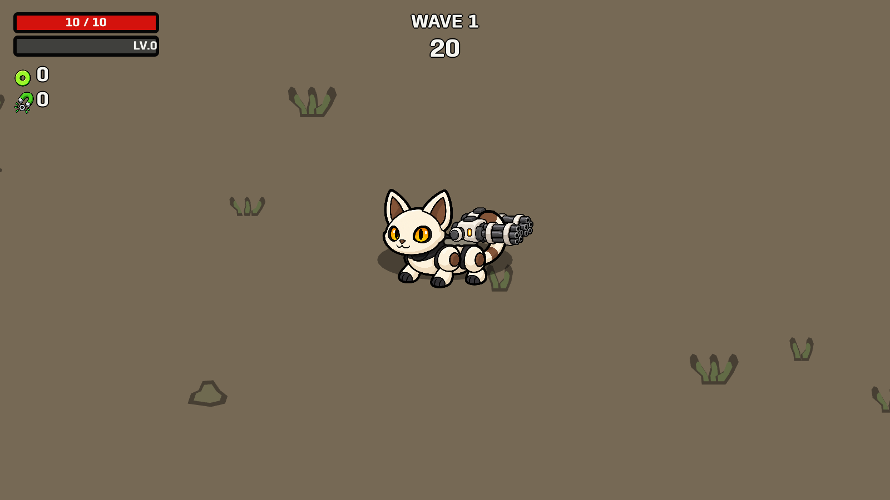

Player or eligible-pet proximity triggers the angry sound, stopped movement and twice-fast firing. The connected body now has a 0.2-second entry and boosted pulse; original separate face/ear animation is not reproduced.
Launch current pet level · Behavior checks · Reference and projectile audit
